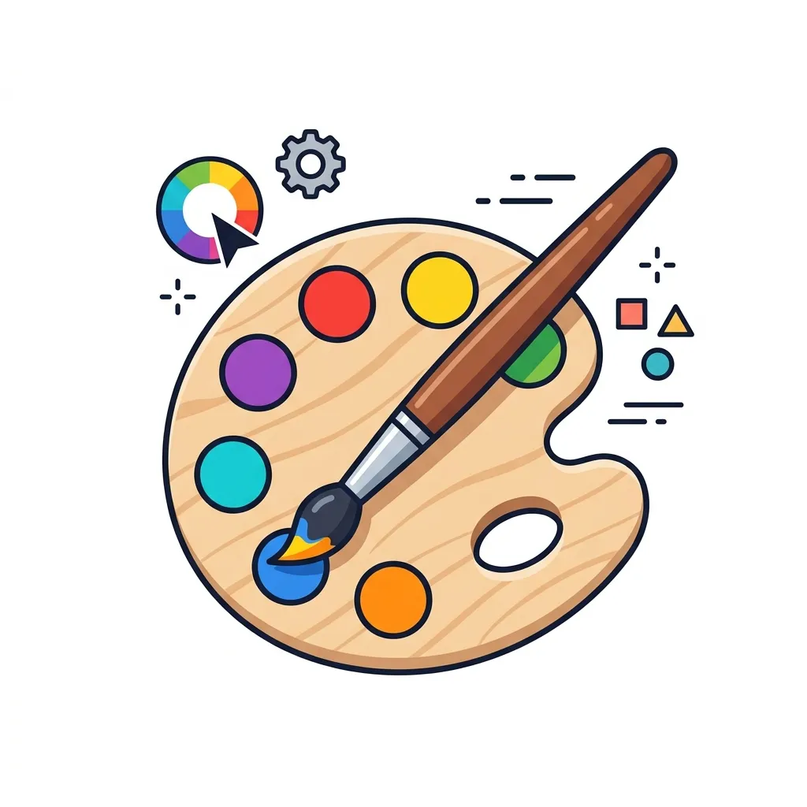

SNSに最適な縦型動画をサクッと作成
YouTube ShortsやTikTok、Instagramリールなどでよく見かける「走る棒グラフ動画」を最短数分で作れます。スマートフォンの画面にフィットする縦長サイズでの動画作成が可能で、視聴者の目を釘付けにするランキングコンテンツの発信に最適です。色やアニメーション速度を自由に調整して、独自の演出を加えましょう。
特長
必要なものはブラウザだけ。データを入れればすぐ動き出します。
📥
CSV / Excel に対応
手持ちの表データをそのままアップロード。ブラウザ内の表で直接入力・編集もできます。

見た目を自由に設定
色・フォント・キャンバスサイズ・ラベルなどを細かく調整。SNS向けの縦型にも対応。
⚡
インストール不要
アプリのダウンロードや会員登録なしで、ページを開けばすぐに作成を始められます。
💾
保存・バックアップ
作成中のデータはブラウザに保存。バックアップ書き出し／読み込みにも対応します。
活用シーン（ユースケース）
さまざまな場面で、データを分かりやすく伝えます。
SNS・動画クリエイター
ランキング動画の作成
YouTubeやTikTok向けの、目を引く登録者数・売上推移などのランキング動画を素早く作成できます。
ビジネス・プレゼン
会議でのデータ報告
市場シェアや売上の推移を動きのあるグラフで可視化し、プレゼンテーションの説得力を高めます。
教育・研究機関
歴史・統計の学習教材
国別の人口推移やGDPの変遷など、長期的な統計データを直感的に理解できる教材として活用できます。
使い方は3ステップ
はじめてでも数分で動くグラフが完成します。
1
データを用意
A列に項目名、B列に画像URL（任意）、C列以降に年ごとの数値を入れた CSV / Excel を用意します。
2
アップロード or 直接入力
ファイルをアップロードするか、ツール内の表に直接データを打ち込みます。
3
設定して再生・保存
色やフォントを整えてアニメーションを再生。気に入ったら保存して完成です。